MOTION-ALIGNED WORD EMBEDDINGS FOR TEXT-TO-MOTION GENERATION
Ke Han University of Trento ke.han.aca@gmail.com Yueming Lyu → Nanjing University ymlv@nju.edu.cn Nicu Sebe University of Trento niculae.sebe@unitn.it
ABSTRACT
Existing text-to-motion (T2M) generation models typically rely on pretrained large language models to encode textual inputs. However, these models, trained on generic text corpora, lack explicit alignment between motion-related words (e.g., "clockwise", "quickly") and human skeletal movements. This misalignment, fundamentally rooted in the word embedding layers, severely limits the ability of T2M models to understand and generalize fine-grained motion semantics. To tackle this issue, we propose Motion-Aligned Text Encoding (MATE), a novel framework that explicitly incorporates motion semantics into the word embedding layers of large language models to enhance text-motion alignment for motion generation. To address the challenge of inherent semantic entanglement in motion sequences, MATE introduces two key components: 1) a motion localization strategy that establishes localized correspondences between sub-texts and motion segments, enabling soft attention guidance for semantic localization; and 2) a motion disentanglement module that isolates word-specific motion semantics via contrastive kinematic prototypes, ensuring word-level alignment between linguistic and kinematic representations. Remarkably, language models enhanced with MATE can be seamlessly integrated into existing T2M methods, significantly surpassing state-of-the-art performance on two standard benchmarks with minimal modifications. Code is available at https://github.com/ke-han-aca/MATE.git.
1 INTRODUCTION
Text-to-motion (T2M) generation aims to synthesize sequences of human skeletal movements conditioned on textual descriptions Zhou et al. (2024a); Chi et al. (2024); Liu et al. (2024a); Fan et al. (2024); Wang et al. (2024b). As a cross-modal generation task, T2M requires models to accurately translate textual descriptions into motion semantics and decode them into realistic human motions. However, existing T2M approaches still often exhibit limited cross-modal understanding. As shown in Fig. 1, while current models achieve the sentence-level alignment in example (1), they often struggle to robustly understand motion-related words such as "clockwise", leading to poor generalization and failure to generate plausible results for descriptions like "jogs in a clockwise motion" in example (2).
This limited word-level understanding largely stems from the limitations of text encoders, which process the textual inputs and directly determine the semantic information conveyed to the motion generator. While most T2M methods adopt pretrained large language models (LLMs) such as CLIP Radford et al. (2021) or DistilBERT Sanh et al. (2019) to leverage their strong textual understanding capabilities, these models are trained on general text corpora (or text-image pairs in the case of CLIP), lacking fine-grained alignment between motion-related words and human skeletal movements. In particular, the word embedding layers in LLMs fundamentally define the word semantics, which can differ substantially between linguistic and kinematic contexts. For instance, while "clockwise" functions linguistically as an adjective or adverb, in the kinematic domain it denotes a concrete rotational motion with a specific directional orientation. Without addressing such cross-modal word-level misalignment, LLMs struggle to encode motion-aware information effectively, inherently limiting the generation quality and generalization ability of T2M approaches.
→Corresponding author

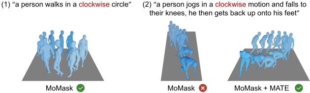
To address this limitation, we propose Motion-Aligned Text Encoding (MATE), a novel framework that incorporates motion semantics into the word embedding layers of LLMs to enhance text-motion alignment for motion generation. MATE optimizes only the word embedding layers while freezing the subsequent layers, which retain strong contextual modeling abilities acquired during large-scale language model pretraining. We hypothesize that these higher layers can generalize effectively to motion semantics, as language and motion share structural properties, i.e., both consisting of compositional elements (e.g., words and actions) organized in temporal sequences.
However, incorporating word-specific motions semantics into word embeddings remains highly challenging and largely underexplored, primarily due to the intrinsic entanglement of motion semantics. Existing datasets typically provide only sentence-level annotations for entire motion sequences Guo et al. (2022a); Plappert et al. (2016), lacking explicit alignment between specific words and corresponding motion segments. This limitation restricts the model's ability to temporally ground word-level semantics, particularly in sequences involving multiple compositional actions. More importantly, the semantics associated with related words are inherently intertwined, making it difficult to attribute distinct motion patterns to individual words, thereby limiting the model's capacity for fine-grained semantic understanding.
To address these challenges, MATE introduces two key components: 1) A motion localization strategy that jointly decomposes paired textual descriptions and motion sequences into semantically aligned sub-units. This enables the construction of a soft attention prior that guides the temporal localization of word semantics; and 2) A motion disentanglement module that isolates word-specific motion semantics through two complementary mechanisms: self-disentanglement, which extracts shared semantics across related motions via contrastive kinematic prototypes; and cross-disentanglement, which enforces the exclusion of unrelated semantics, jointly ensuring semantic purity and inter-word discriminability. The disentangled motion semantics are then aligned with their corresponding word embeddings, effectively addressing the word-level misalignment inherent in LLMs.
MATE offers an resource-efficient solution for LLM fine-tuning by optimizing only word embedding layers, while maintaining broad compatibility with various LLMs. The MATE-enhanced LLMs can be seamlessly integrated into existing T2M methods with minimal architectural modifications. Extensive experiments demonstrate that MATE consistently improves text-motion alignment and generalization capability, significantly advancing the state of the art on standard benchmarks including HumanML3DMahmood et al. (2019) and KIT Plappert et al. (2016). The main contributions of this work are summarized as follows:
1) To the best of our knowledge, MATE is the first framework to explicitly address the text-motion misalignment fundamentally rooted in the word embeddings of LLMs for motion generation. 2) We introduce a text-motion joint segmentation strategy that automatically establishes correspondences between sub-texts and motion segments, enabling action-level semantic localization for paired text-motion data. 3) We propose a motion disentanglement module that achieves word-level semantic disentanglement, mitigating the challenge of semantic entanglement in motion sequences. 4) Extensive experiments demonstrate that MATE-enhanced language models can be seamlessly integrated into existing T2M pipelines, yielding substantial performance improvements and significantly surpassing state-of-the-art results across two standard benchmarks.
2 RELATED WORKS
Text-to-Motion Generation typically consists of two stages: text encoding and motion synthesis Shafir et al. (2024); Xie et al. (2024); Liu et al. (2023); Liang et al. (2024). In this pipeline, textual descriptions are first transformed into text embeddings, which are then mapped to motion sequences. Most existing works keep the text encoder frozen and instead focus on improving the motion generation module, often through advanced architectures such as diffusion models Tevet et al. (2023); Zhang et al. (2023b); Jin et al. (2024a); Ren et al. (2023); Wang et al. (2023) and quantized variational autoencoders Chen et al. (2023); Zhang et al. (2023a); Van Den Oord et al. (2017); Dai et al. (2024). However, these methods typically rely on off-the-shelf embeddings from pretrained large language models (LLMs), leaving unaddressed the intrinsic semantic gap between linguistic representations and kinematic motion features that arises from the LLMs themselves.
To address text-motion misalignment, some works pretrain new language models using text-motion pairs to obtain motion-aware text embeddings, such as LaMP Li et al. (2025), MotionGPT Jiang et al. (2023) and MotionGPT-2 Wang et al. (2024a). Our method differs from them in two key aspects. 1) These methods primarily operate at the sentence level, whereas our approach focuses on word-level alignment without requiring any word-level annotations, enabling modeling of finer-grained motion semantics. 2) They train new language encoders largely from scratch on relatively small text-motion datasets, which may limit their language modeling capacity. In contrast, our method fine-tunes only the lightweight word embedding layer of a pretrained LLM while keeping all higher layers frozen, thereby preserving the rich linguistic knowledge learned from large-scale corpora.
Contrastive Learning has been widely applied for learning text-motion aligned representations in both retrieval and generation tasks. Methods such as MotionCLIP Tevet et al. (2022), TMR Petrovich et al. (2023), TM2T Guo et al. (2022b), TEMOS Petrovich et al. (2022), and HumanTOMATO Lu et al. (2024) construct sentence-level contrastive objectives to obtain motion-aware text embeddings or to regularize motion representations. LAVIMO Yin et al. (2024) further incorporates videos as an additional modality and learns trimodal alignment through contrastive learning across text, motion, and video. More recently, LLM-based models like M3GPT Luo et al. (2024) also adopt contrastive objectives during multi-task pretraining to enhance motion-language understanding.
However, these methods primarily focus on sentence-level alignment. In contrast, our method introduces a prototype-based contrastive mechanism that explicitly operates at the word level, enabling finer-grained semantic disentanglement and alignment without requiring word-level annotations.
Large Language Model Fine-Tuning has emerged as a powerful paradigm for adapting generalpurpose textual representations to downstream tasks such as domain adaptation Ding et al. (2023); Susnjak et al. (2025), image generation Li et al. (2024); Liu et al. (2024b), and video generation Rasheed et al. (2023); Wu et al. (2023). In the context of T2M, recent works LMM Zhang et al. (2024a), AvatarGPT Zhou et al. (2024b), Motion-Agent Wu et al. (2025) unify multiple text-motion tasks within a single framework, often incorporating expanded token vocabularies and instruction tuning techniques Ouyang et al. (2022). Our method differs in two key ways: 1) Instead of fine-tuning full LLMs, which is computationally expensive, we adapt only the lightweight word embedding layers, providing a more resource-efficient approach. 2) Rather than introducing a new standalone framework, we produce plug-and-play motion-aligned text encoders that can be directly integrated into existing T2M models, improving performance without modifying their architectures.
3 METHOD
3.1 OVERVIEW
Word embedding layers, typically placed at the input of LLMs, function as a lexical lookup table that maps discrete word tokens to continuous vectors for contextual modeling. They play a crucial role in encoding word meanings and inter-word relationships. However, word-level semantics in linguistic domain often differ fundamentally from those in the kinematic domain. For example, "clockwise" and "anti-clockwise" are linguistically similar, due to sharing morphological structure and grammatical function. In contrast, they kinematically denote opposite directions of rotation and are incompatible, thus leading to significant cross-modality discrepancies.

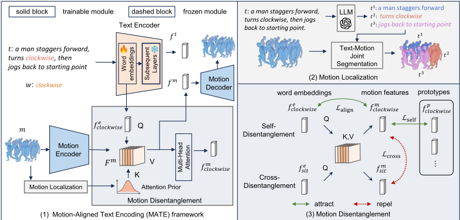
To bridge this gap, unlike existing T2Mmethods that use pretrained LLMs without adaptation, this work introduces Motion-Aligned Text Encoding (MATE), a novel approach for explicitly aligning the word embedding layers in LLMs with word-specific motion semantics.
Specifically, we formulate the learning objective as follows: given a triplet ¶t↪m↪w♦ sampled from the training set, where t denotes a textual description, m is the corresponding motion sequence, and w is a word token sampled from t, the goal is to align the textual semantics of w with its associated motion semantics expressed in m by optimizing its word embeddings in language models.

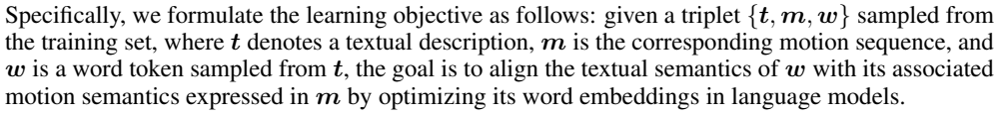
To achieve this alignment, as shown in Fig. 2, MATE comprises two key components: 1) Motion localization, which establishes correspondences between temporally aligned subtexts and motion segments for word semantic localization; 2) Motion disentanglement, which disentangles motion features that are semantically attributable to individual words for alignment with their word embeddings.
3.2 TEXT-GUIDED MOTION LOCALIZATION
A motion sequence is a complex integration of multiple word-level semantics, making fine-grained semantic alignment particularly challenging, especially in long sentences involving multiple words and actions. To tackle this issue, we adopt a coarse-to-fine semantic extraction strategy, with the first sub-goal of localizing the motion semantics corresponding to an individual word w within the motion sequence m. However, most existing motion datasets Guo et al. (2022a); Plappert et al. (2016) provide only sentence-level annotations for entire sequences, lacking explicit supervision for word-level localization. To overcome this limitation, we propose a text-motion joint segmentation pipeline that automatically establishes correspondences between each sub-action described in the text and its counterpart segment in the motion sequence, as illustrated in Fig. 2 (2).
Specifically, we employ ChatGPT Roumeliotis & Tselikas (2023) to decompose each textual description t into a set of sub-texts t1 ↪ · · · ↪ tN (N → 1), where each sub-text describes one or more temporally coherent actions. We then seek to segment the motion sequence m into N non-overlapping clips, each aligned with its corresponding sub-text. To this end, we formulate an optimal partitioning problem, where segment boundaries are adjusted to minimize the matching loss between each sub-text and its corresponding motion segment. Given a sentence decomposed into N sub-texts, the objective is defined as:

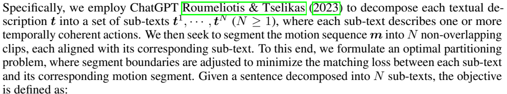

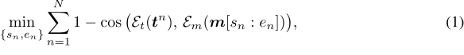
where sn and en denote the start and end frames of the n-th segment, constrained by sn+1 = en. Here, Et and Em are frozen text and motion encoders from a pretrained text-to-motion retrieval model Lu et al. (2024), and cos(·↪ ·) denotes the cosine similarity between encoded text and motion features. An exhaustive search over all valid partitions is performed to identify the boundaries that best align motion segments with their respective sub-texts.
The obtained segmentation is not directly used as ground-truth localization, but instead serves as a soft prior to guide the discovery of the semantics of the word w within the motion sequence m. Specifically, a motion encoder simultaneously extracts a sequence-level representation f m ↓ RD and frame-level features F m ↓ RT↑D from the motion sequence m, where T denotes the number of frames and D is the feature dimension. We introduce a multi-head attention mechanism, in which the word embeddings serve as a query to explicitly attend to relevant motion features, formulated as:

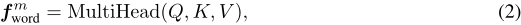

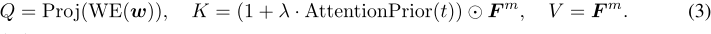
Here, WE(w) is the trainable word embeddings of w from the text encoder, Proj is a linear projection layer, and AttentionPrior(t) is a temporal attention prior derived from segmentation information:

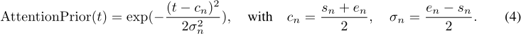
where t is the frame index, and sn, en are the start and end frames in the localized segment of w, respectively. The Gaussian-shaped AttentionPrior(t) softly highlights frames near the center of the localized segment while smoothly attenuating distant frames, thereby improving robustness against localization errors introduced by the segmentation process.
3.3 WORD-GUIDED MOTION DISENTANGLEMENT
While the above approach enables localization of word-level semantics, the semantics of related words remain highly intertwined. For instance, as shown in Fig. 2 (1) and (2), although the segment corresponding to "turn clockwise" can be identified, it remains challenging for the model to accurately distinguish between the semantics of "turn" and "clockwise", thereby hindering the precise understanding of individual words. To address this limitation, we propose a word-guided motion disentanglement approach that explicitly isolates motion semantics attributable to individual word units. Toward this goal, we introduce the following three criteria for effective motion disentanglement.
1) Stability: A given word query should consistently attend to shared motion features across different motions that exhibit the corresponding semantics (e.g., the features disentangled by the word "clockwise" from motions of "turn clockwise" and "jog in a clockwise circle" should remain similar.
2) Discriminability: Different word queries should result in semantically distinct motion features (e.g., the features disentangled by "turn" should be distinguishable from those by "clockwise").
3) Rationality: Disentanglement should yield meaningful features only when the motion sequence contains semantics associated with the queried word (e.g., querying "clockwise" from the motion of "walk forward" should not produce a meaningful feature representation).
To satisfy Criteria 1 and 2, we introduce a self-disentanglement mechanism based on prototype representations. Specifically, we predefine a set of motion-word prototypes consisting of K learnable vectors ¶f pwk ♦Kk=1 , each representing the motion semantics associated with a specific word wk. Suppose ¶ti↪mi↪wi♦ the i-th triplet sample in a mini-batch, the disentangled motion features f mi wi satisfy the self-disentanglement loss Lself:
where V is the set of samples in a mini-batch. The loss Lself encourages f mi wi to be pulled closer to its corresponding prototype f pwi while being pushed away from all other prototypes. Simultaneously, each prototype is optimized towards a stable and shared semantic representation across motions that express the semantics of wi. In contrast to conventional contrastive losses Radford et al. (2021); Oord et al. (2018) that operate at the batch level, the introduction of prototypes enables contrastive

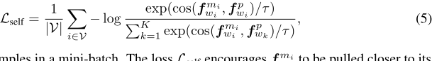
learning over dataset-wide word semantics, thereby enhancing the stability and discriminability of motion disentanglement.
To satisfy Criterion 3, we further formulate a cross-disentanglement mechanism: the motion mi is also queried by the word token wj from the j-th sample, and if mi does not contain the semantics of wj, the model is encouraged to produce motion features that are orthogonal to the reasonably disentangled features f mi wi . The cross-disentanglement loss Lcross is defined as

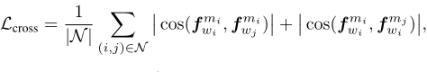
where N is the set of negative pairs, and f mi wj denotes the disentangled motion features from the i-th sequence mi with the word query wj from the j-th sample. Lcross drives the model to discriminate whether the queried word semantics is expressed in the motion sequence to ensure the accuracy of motion disentanglement.
3.4 MOTION-ALIGNED WORD EMBEDDING
To align the disentangled motion features with corresponding word embeddings, we formulate an alignment loss Lalign as

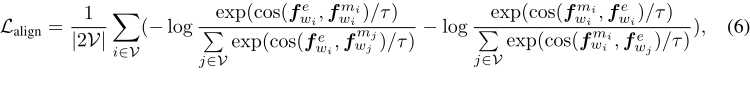
where f ewi = Proj(WE(wi)) is the projected word embeddings, consistent with the query in Eq (3). This loss adopts a symmetric InfoNCE formulation Oord et al. (2018) to encourage alignment between paired word embeddings and their motion semantics while simultaneously promoting separation between mismatched pairs. The motion-aligned word embedding loss is summarized as

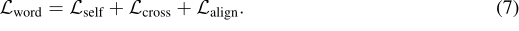
However, the above approach primarily focuses on individual word-level alignment and overlooks the contextual dependencies among words. To tackle this issue, we further introduce a sentence-level alignment objective, which aligns the text feature vector f t extracted from t with the corresponding motion feature vector f m fromm using an InfoNCE loss Lsent. Additionally, f m is passed through a motion decoder to reconstruct the original motion sequence m, guided by a reconstruction loss Lrec to preserve detailed motion information. The overall training objective is:

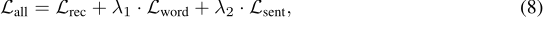
where ω1 and ω2 are weighting factors.
4 EXPERIMENTS
4.1 EXPERIMENT SETTINGS
Dataset. We conduct experiments on two standard motion datasets: HumanML3D Mahmood et al. (2019) and KIT Plappert et al. (2016). HumanML3D contains 14,616 motion sequences, annotated with 44,970 textual descriptions, while KIT includes 3,911 sequences paired with 6,278 descriptions.
Evaluation Protocols. Following standard protocols Guo et al. (2022a), we use 5 evaluation metrics: R-Precision and Multimodal Distance (MMDist) measure how accurately generated motions match the texts. Frechet Inception Distance (FID) evaluates the distributional similarity between generated and real motion features. Diversity computes the average Euclidean distance across 300 randomly sampled pairs of generated motions. MultiModality (MModality) reflects the variation of generated motions, calculated as the average distance among 10 motions generated from the same text.
Implementation Details. The text encoder in the MATE framework could be various large language models, such as CLIP Radford et al. (2021), DistilBERT Sanh et al. (2019), etc. The number of word prototypes (K) is automatically decided by the number of words included in the training set.

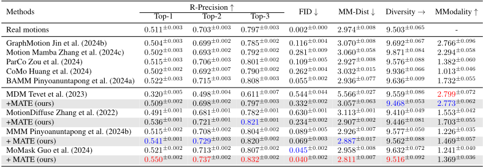
Recognized table text (check against the image)
| Methods | R-Precision ↗ | FID | MM-Dist | MModality ↗ | |||
|---|---|---|---|---|---|---|---|
| Top-1 | Top-2 | Top-3 | ↘ | ↘ | Diversity≃ | ||
| Real motions | 0▷511◦0▷003 | 0▷703◦0▷003 | 0▷797◦0▷003 | 0▷002◦0▷000 | 2▷974◦0▷008 | 9▷503◦0▷065 | - |
| GraphMotion Jin et al. (2024b) Motion Mamba Zhang et al. ParCo Zou et al. (2024) CoMo Huang et al. (2024) BAMMPinyoanuntapong et al. MDMTevet et al. (2023) | 0▷504◦0▷003 0▷502◦0▷003 0▷515◦0▷003 0▷502◦0▷002 | 0▷699◦0▷002 0▷693◦0▷002 0▷706◦0▷003 0▷692◦0▷007 0▷715◦0▷003 0▷498◦0▷004 0▷698◦0▷002 0▷681◦0▷001 0▷721◦0▷001 0▷708◦0▷002 0▷729◦0▷003 0▷713◦0▷002 0▷737◦0▷002 | 0▷785◦0▷002 0▷792◦0▷002 0▷801◦0▷002 0▷790◦0▷002 0▷808◦0▷003 0▷611◦0▷007 0▷797◦0▷003 0▷820◦0▷002 0▷832◦0▷002 | 0▷116◦0▷004 0▷281◦0▷009 0▷109◦0▷005 0▷262◦0▷004 0▷055◦0▷002 0▷544◦0▷044 0▷332◦0▷002 0▷630◦0▷001 0▷089◦0▷005 0▷069◦0▷003 | 3▷070◦0▷008 3▷060◦0▷058 2▷927◦0▷008 3▷032◦0▷015 2▷936◦0▷077 5▷566◦0▷027 3▷057◦0▷063 3▷113◦0▷001 2▷907◦0▷002 2▷926◦0▷007 | 9▷692◦0▷067 9▷871◦0▷084 9▷576◦0▷088 9▷936◦0▷066 9▷636◦0▷009 9▷559◦0▷086 9▷468◦0▷053 9▷410◦0▷049 9▷446◦0▷081 9▷577◦0▷050 9▷562◦0▷088 9▷632◦0▷072 | 2▷766◦0▷096 2▷294◦0▷058 1▷382◦0▷060 1▷013◦0▷046 1▷732◦0▷055 2▷799◦0▷072 2▷773◦0▷062 1▷553◦0▷042 1▷703◦0▷055 1▷226◦0▷035 1▷469◦0▷057 1▷241◦0▷040 |
| (2024c) | |||||||
| (2024a) | 0▷522◦0▷003 | ||||||
| 0▷320◦0▷005 | |||||||
| +MATE (ours) | 0▷509◦0▷002 | ||||||
| MotionDiffuse Zhang et al. (2022) | 0▷491◦0▷001 | 0▷782◦0▷001 | |||||
| +MATE (ours) | 0▷536◦0▷001 | 0▷821◦0▷001 | 0▷234◦0▷002 | ||||
| MMMPinyoanuntapong et al. (2024b) | 0▷515◦0▷002 | 0▷804◦0▷002 | |||||
| + MATE (ours) | 0▷541◦0▷001 | 2▷887◦0▷017 | |||||
| MoMask Guo et al. (2024) | 0▷521◦0▷002 | 0▷807◦0▷002 | 0▷045◦0▷002 | 2▷958◦0▷008 | |||
| + MATE (ours) | 0▷550◦0▷002 | 0▷040◦0▷002 | 2▷811◦0▷007 | 9▷516◦0▷092 | 1▷369◦0▷036 | ||

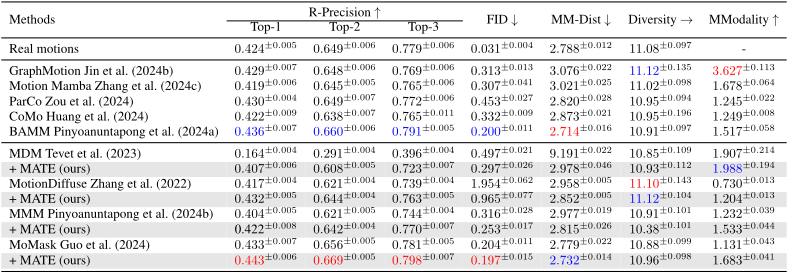
Recognized table text (check against the image)
| Methods | R-Precision ↗ | FID | MM-Dist | MModality ↗ | |||
|---|---|---|---|---|---|---|---|
| Top-1 | Top-2 | Top-3 | ↘ | ↘ | Diversity≃ | ||
| Real motions | 0▷424◦0▷005 | 0▷649◦0▷006 | 0▷779◦0▷006 | 0▷031◦0▷004 | 2▷788◦0▷012 | 11▷08◦0▷097 | - |
| GraphMotion Jin et al. (2024b) Motion Mamba Zhang et al. (2024c) ParCo Zou et al. (2024) CoMo Huang et al. (2024) BAMMPinyoanuntapong et al. | 0▷429◦0▷007 0▷430◦0▷004 0▷422◦0▷009 0▷436◦0▷007 | 0▷648◦0▷006 0▷660◦0▷006 0▷291◦0▷004 0▷608◦0▷005 0▷621◦0▷004 0▷644◦0▷004 0▷621◦0▷005 0▷642◦0▷004 0▷656◦0▷005 0▷669◦0▷005 | 0▷769◦0▷006 0▷791◦0▷005 0▷396◦0▷004 0▷739◦0▷004 0▷763◦0▷005 0▷744◦0▷004 0▷781◦0▷005 0▷798◦0▷007 | 0▷313◦0▷013 0▷200◦0▷011 0▷497◦0▷021 0▷297◦0▷026 1▷954◦0▷062 0▷316◦0▷028 0▷204◦0▷011 0▷197◦0▷015 | 3▷076◦0▷022 3▷021◦0▷025 2▷820◦0▷028 2▷873◦0▷021 2▷714◦0▷016 9▷191◦0▷022 2▷978◦0▷046 2▷958◦0▷005 2▷852◦0▷005 2▷977◦0▷019 2▷815◦0▷026 2▷779◦0▷022 2▷732◦0▷014 | 11▷12◦0▷135 11▷02◦0▷098 10▷95◦0▷094 10▷95◦0▷196 10▷91◦0▷097 10▷85◦0▷109 10▷93◦0▷112 11▷10◦0▷143 11▷12◦0▷104 10▷91◦0▷101 10▷38◦0▷101 10▷88◦0▷099 | 3▷627◦0▷113 1▷678◦0▷064 1▷245◦0▷022 1▷249◦0▷008 1▷517◦0▷058 |
| 0▷419◦0▷006 | 0▷645◦0▷005 0▷649◦0▷007 0▷638◦0▷007 | 0▷765◦0▷006 0▷772◦0▷006 0▷765◦0▷011 | 0▷307◦0▷041 0▷453◦0▷027 0▷332◦0▷009 | ||||
| (2024a) | |||||||
| MDMTevet et al. (2023) | 0▷164◦0▷004 | 1▷907◦0▷214 | |||||
| + MATE (ours) | 0▷407◦0▷006 | 0▷723◦0▷007 | 1▷988◦0▷194 | ||||
| MotionDiffuse Zhang et al. (2022) + MATE (ours) | 0▷417◦0▷004 | 0▷965◦0▷077 | 0▷730◦0▷013 1▷204◦0▷013 | ||||
| MMMPinyoanuntapong et al. (2024b) | 0▷432◦0▷005 0▷404◦0▷005 | 1▷232◦0▷039 | |||||
| + MATE (ours) | 0.422◦0▷008 | 0▷770◦0▷007 | 0▷253◦0▷017 | 1▷533◦0▷044 | |||
| MoMask Guo et al. (2024) | 0▷433◦0▷007 | 1▷131◦0▷043 | |||||
| + MATE (ours) | 0▷443◦0▷006 | 10▷96◦0▷098 | 1▷683◦0▷041 | ||||
Specifically, we perform lemmatization on textual descriptions and summarize the vocabulary, establishing K= 5,161 and 1,191 prototypes for HumanML3D and KIT, respectively. These prototypes are initialized with their corresponding word embeddings in the pretrained language models.
After training MATE, we integrate the MATE-enhanced text encoder into existing T2Mmodels in place of their original encoders, and retrain the models from scratch. The training and inference procedures strictly follow the official implementations of the T2Mmodels, without any modifications. To ensure statistical reliability, we perform 20 rounds of inference and report the averaged results. Unless otherwise stated, we use MoMask Guo et al. (2024) with the MATE-enhanced CLIP as the default T2Mmodel for evaluation.
4.2 COMPARISON WITH STATE-OF-THE-ART METHODS
Quantitative Comparison. Table 1 and Table 2 present the performance of state-of-the-art (SOTA) T2Mmodels. The "+MATE" variants of MDM Tevet et al. (2023), MotionDiffuse Zhang et al. (2022), MMM Pinyoanuntapong et al. (2024b) and MoMask Guo et al. (2024) are obtained by retraining the original models with the pretrained CLIP text encoders replaced by MATE-enhanced CLIP, where only the word embedding layers are updated. Despite this minimal modification, our approach consistently yields substantial improvements across all evaluation metrics on both benchmarks. Notably, while the performance gains on HumanML3D are significant, the improvements on KIT are relatively modest due to the smaller dataset size, which constrains the optimization of word embeddings in large language models.
Visualization Comparison. Fig. 3 compares motion sequences generated by different SOTA methods. MATE accurately distinguishes fine-grained semantics, such as "kick one time with the right leg" and "three times with the left leg" in the upper example, and faithfully captures key textual descriptions like "counterclockwise circle" and "yawn" in the lower example, demonstrating the superiority of our approach in fine-grained motion semantic understanding and text-motion alignment.

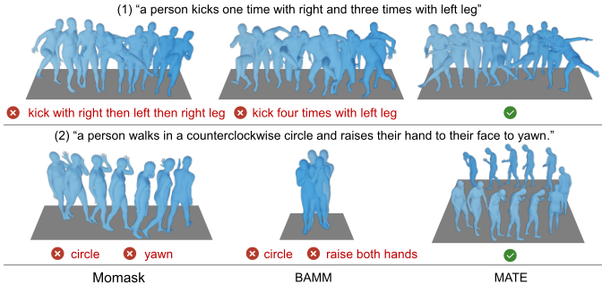

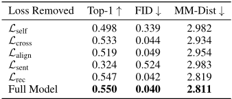
Recognized table text (check against the image)
| Loss Removed | Top-1 ↗ | FID ↘ | MM-Dist ↘ |
|---|---|---|---|
| Lself | 0.498 | 0.339 | 2.982 |
| Lcross | 0.533 | 0.044 | 2.934 |
| Lalign | 0.519 | 0.049 | 2.954 |
| Lsent | 0.324 | 0.524 | 2.983 |
| Lrec | 0.547 | 0.042 | 2.819 |
| Full Model | 0.550 | 0.040 | 2.811 |
4.3 ABLATION STUDY
Loss Functions. Table 3 presents the ablation study of the loss functions. Removing Lself, Lcross, or Lalign leads to varying degrees of performance degradation, highlighting their complementary and essential contributions. Specifically, Lself and Lcross promote the discriminability and effectiveness of word-level disentangled motion semantics, while Lalign is critical for integrating these semantics into the word embeddings. Additionally, Lsent plays an important role by enforcing alignment between entire sentences and motion sequences, thereby modeling contextual dependencies across words. Removing Lrec also results in slight performance degradation, as motion reconstruction can enhance the informativeness of motion features.
Optimization of Different Layers. Table 4 compares the effects of optimizing different layers of CLIP within the MATE framework. Fine-tuning subsequent layers or the entire model markedly increases the number of trainable parameters, leading to severe overfitting and degraded generation performance due to the limited size of motion datasets. Instead, MATE restricts optimization to the word embedding layers, effectively aligning word-level semantics while preserving the strong contextual representations captured by the subsequent frozen layers. We also evaluate the LoRA, which is a commonly used LLM fine-tuning strategy Zhang et al. (2024b) by introducing additional lightweight layers while keeping the pretrained model frozen. However, it does not lead to notable performance improvements, suggesting its limited alignment ability in our setting.

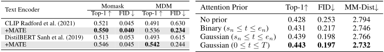
Recognized table text (check against the image)
| Text Encoder | Momask | MDM | Attention Prior | Top-1↗ | FID↘ | MM-Dist↘ | ||
|---|---|---|---|---|---|---|---|---|
| Top-1 ↗ | FID ↘ | Top-1 ↗ | FID ↘ | |||||
| CLIP Radford et al. (2021) | 0.521 | 0.045 | 0.491 | 0.630 | No prior | 0.428 | 0.253 | 2.794 |
| +MATE | 0.550 | 0.040 | 0.536 | 0.234 | Binary (sn ⇐ t ⇐ en) | 0.431 | 0.217 | 2.746 |
| DistilBERT Sanh et al. (2019) | 0.513 | 0.053 | 0.493 | 0.615 | Gaussian (sn ⇐ t ⇐ en) | 0.439 | 0.198 | 2.766 |
| +MATE | 0.546 | 0.045 | 0.542 | 0.244 | Gaussian (0 ⇐ t ⇐ T ) | 0.443 | 0.197 | 2.732 |
Integration with Different Language Models. We tried constructing MATE with CLIP Radford et al. (2021) and DistilBERT Sanh et al. (2019), two of the most commonly adopted language models in T2Mmethods, as the text encoder. As shown in Table 5, incorporating MATE with either model consistently leads to remarkable performance gains, showing the strong compatibility and generalization capability of MATE across different language models.

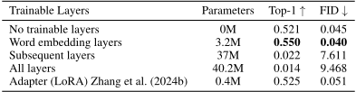
Recognized table text (check against the image)
| Trainable Layers | Parameters | Top-1 ↗ | FID ↘ |
|---|---|---|---|
| No trainable layers | 0M | 0.521 | 0.045 |
| Word embedding layers | 3.2M | 0.550 | 0.040 |
| Subsequent layers | 37M | 0.022 | 7.611 |
| All layers | 40.2M | 0.014 | 9.468 |
| Adapter (LoRA) Zhang et al. (2024b) | 0.4M | 0.525 | 0.051 |
Attention Prior. The attention prior, based on motion localization, is evaluated in Table 6. "No prior" denotes using the raw motion features as keys in Eq. (3) without any attention prior, making word-level semantic extraction from full sequences challenging. "Binary (sn ⇐ t ⇐ en)" applies a hard binary mask, assigning 1 to frames within the target segment and 0 elsewhere, which is highly sensitive to segmentation errors. "Gaussian" is the soft attention prior defined in Eq. (4). "Gaussian (sn ⇐ t ⇐ en)" restricts the prior within the segment, with zero attention outside. "Gaussian (0 ⇐ t ⇐ T )" extends the prior across the entire sequence, softly emphasizing the target region while gradually attenuating attention to neighboring frames, thus improving robustness to localization noise and achieving the best generation results.
4.4 VISUALIZATION RESULTS

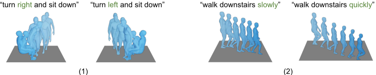
Motion Consistency with Word Change. To demonstrate that MATE effectively learns word-level semantic understanding, we present examples in Fig. 4, where individual words in the text prompts are replaced with their antonyms. MATE accurately captures the semantic differences between "right" and "left" as well as "slowly" and "quickly," and generates motions that are semantically aligned with the corresponding words, highlighting its robust fine-grained word-level understanding.

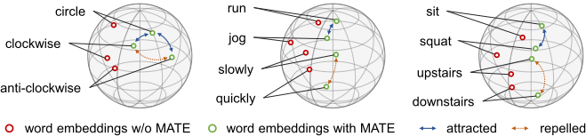
Distributions of Word Embeddings. To better understand the mechanism underlying the performance gains of our approach, we visualize the effect of MATE on word embeddings in Fig. 5. MATE draws together the embeddings of kinematically related motion words (e.g., "clockwise" and "circle", "run" and "jog") while pushing apart those with contrasting semantics (e.g., "quickly" and "slowly", "upstairs" and "downstairs"). This suggests that MATE structurally regularizes the word embedding space, promoting a closer alignment with motion semantics.
4.5 ANALYSIS OF TEXT-MOTION JOINT SEGMENTATION

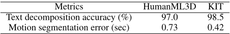
Recognized table text (check against the image)
| Metrics | HumanML3D | KIT |
|---|---|---|
| Text decomposition accuracy (%) | 97.0 | 98.5 |
| Motion segmentation error (sec) | 0.73 | 0.42 |
Quantitative Evaluation. To quantitatively evaluate text-motion joint segmentation, we manually assess the text decomposition results and annotate ground-truth segmentation boundaries for 200
motion sequences randomly sampled from the HumanML3D and KIT datasets, respectively. We then compute the average accuracy of text decomposition and the boundary errors between our predictions and the ground truth, with results reported in Table 7. The decomposition accuracy reaches 97.0% and 98.5% on the two datasets, demonstrating the strong text-processing capability of large language models within our approach. The small boundary errors (0.73s and 0.42s) further indicate that our method achieves precise alignment, with deviations well within a second, between decomposed texts and segmented motion clips. Notably, while some noise may be introduced around the segmentation boundaries, our Gaussian-based soft attention mechanism leverages soft localization signals rather than rigid hard segmentation, thereby improving robustness to such noise.

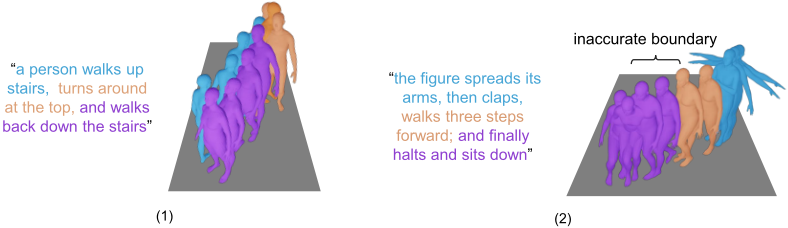
Qualitative Analysis. We present examples of text-motion joint segmentation in Fig. 6. The textual decomposition generated by ChatGPT is generally accurate. The primary source of error arises from imprecise boundaries predicted by the segmentation module. For instance, the boundaries in (1) are correctly identified, whereas in (2), the transition between "walks three steps forward" and "halts and sits down" is slightly misaligned. Such boundary inaccuracies are anticipated and mitigated by the Gaussian-shaped attenuation mechanism in our framework.
5 LIMITATIONS
1) Although our method focuses on word-level semantic alignment, certain words (e.g., "position", "starting", "area") inherently lack clear kinematic semantics or rely on contextual information. Future work will explore selective word-level semantic modeling strategies and the incorporation of contextualized queries to better handle such cases. 2) Word frequencies are imbalanced in the motion descriptions, which is not explicitly considered in this initial exploration of word embedding fine-tuning. An important direction for future work is to explore re-weighting or adaptive updating strategies to mitigate this imbalance.
6 CONCLUSION
In this work, we have proposed a systematic framework that integrates word-level motion localization, semantic disentanglement and alignment, addressing the text-motion misalignment fundamentally rooted in the word embeddings of LLMs for motion generation. Our approach not only demonstrates substantial improvements over state-of-the-art performance on two benchmarks, but also highlights the strong potential of word embedding fine-tuning for enabling motion-aware language modeling.
ACKNOWLEDGMENTS
This work was supported by the EU Horizon project ELIAS (No. 101120237), the FIS project GUIDANCE (No. FIS2023-03251), the National Natural Science Foundation of China (Grant No. 62502200), the Jiangsu Provincial Science and Technology Major Project (Grant No. BG2024042), and the Natural Science Foundation of Jiangsu Province (Grant No. BK20251203).
REFERENCES
Xin Chen, Biao Jiang, Wen Liu, Zilong Huang, Bin Fu, Tao Chen, and Gang Yu. Executing your commands via motion diffusion in latent space. In Proceedings of the IEEE/CVF Conference on Computer Vision and Pattern Recognition, pp. 18000-18010, 2023.
Seunggeun Chi, Hyung-gun Chi, Hengbo Ma, Nakul Agarwal, Faizan Siddiqui, Karthik Ramani, and Kwonjoon Lee. M2d2m: Multi-motion generation from text with discrete diffusion models. European Conference on Computer Vision, 2024.
Yin Cui, Menglin Jia, Tsung-Yi Lin, Yang Song, and Serge Belongie. Class-balanced loss based on effective number of samples. In Proceedings of the IEEE/CVF conference on computer vision and pattern recognition, pp. 9268-9277, 2019.
Wenxun Dai, Ling-Hao Chen, Jingbo Wang, Jinpeng Liu, Bo Dai, and Yansong Tang. Motionlcm: Real-time controllable motion generation via latent consistency model. European Conference on Computer Vision, 2024.
Ning Ding, Yujia Qin, Guang Yang, Fuchao Wei, Zonghan Yang, Yusheng Su, Shengding Hu, Yulin Chen, Chi-Min Chan, Weize Chen, et al. Parameter-efficient fine-tuning of large-scale pre-trained language models. Nature Machine Intelligence, 5(3):220-235, 2023.
Ke Fan, Junshu Tang, Weijian Cao, Ran Yi, Moran Li, Jingyu Gong, Jiangning Zhang, Yabiao Wang, Chengjie Wang, and Lizhuang Ma. Freemotion: A unified framework for number-free text-to-motion synthesis. European Conference on Computer Vision, 2024.
Chuan Guo, Shihao Zou, Xinxin Zuo, Sen Wang, Wei Ji, Xingyu Li, and Li Cheng. Generating diverse and natural 3d human motions from text. In Proceedings of the IEEE/CVF Conference on Computer Vision and Pattern Recognition, pp. 5152-5161, 2022a.
Chuan Guo, Xinxin Zuo, Sen Wang, and Li Cheng. Tm2t: Stochastic and tokenized modeling for the reciprocal generation of 3d human motions and texts. In European Conference on Computer Vision, pp. 580-597, 2022b.
Chuan Guo, Yuxuan Mu, Muhammad Gohar Javed, Sen Wang, and Li Cheng. Momask: Generative masked modeling of 3d human motions. In Proceedings of the IEEE/CVF Conference on Computer Vision and Pattern Recognition, pp. 1900-1910, 2024.
Yiming Huang, Weilin Wan, Yue Yang, Chris Callison-Burch, Mark Yatskar, and Lingjie Liu. Como: Controllable motion generation through language guided pose code editing. In European Conference on Computer Vision, pp. 180-196, 2024.
Biao Jiang, Xin Chen, Wen Liu, Jingyi Yu, Gang Yu, and Tao Chen. Motiongpt: Human motion as a foreign language. Advances in Neural Information Processing Systems, 36, 2023.
Peng Jin, Hao Li, Zesen Cheng, Kehan Li, Runyi Yu, Chang Liu, Xiangyang Ji, Li Yuan, and Jie Chen. Local action-guided motion diffusion model for text-to-motion generation. European Conference on Computer Vision, 2024a.
Peng Jin, Yang Wu, Yanbo Fan, Zhongqian Sun, Wei Yang, and Li Yuan. Act as you wish: Finegrained control of motion diffusion model with hierarchical semantic graphs. Advances in Neural Information Processing Systems, 36, 2024b.
Yanyu Li, Xian Liu, Anil Kag, Ju Hu, Yerlan Idelbayev, Dhritiman Sagar, Yanzhi Wang, Sergey Tulyakov, and Jian Ren. Textcraftor: Your text encoder can be image quality controller. In Proceedings of the IEEE/CVF Conference on Computer Vision and Pattern Recognition, pp. 7985-7995, 2024.
Zhe Li, Weihao Yuan, Lingteng Qiu, Shenhao Zhu, Xiaodong Gu, Weichao Shen, Yuan Dong, Zilong Dong, Laurence Tianruo Yang, et al. Lamp: Language-motion pretraining for motion generation, retrieval, and captioning. In International Conference on Learning Representations, 2025.
Han Liang, Jiacheng Bao, Ruichi Zhang, Sihan Ren, Yuecheng Xu, Sibei Yang, Xin Chen, Jingyi Yu, and Lan Xu. Omg: Towards open-vocabulary motion generation via mixture of controllers. In Proceedings of the IEEE/CVF Conference on Computer Vision and Pattern Recognition, pp. 482-493, 2024.
Hanchao Liu, Xiaohang Zhan, Shaoli Huang, Tai-Jiang Mu, and Ying Shan. Programmable motion generation for open-set motion control tasks. In Proceedings of the IEEE/CVF Conference on Computer Vision and Pattern Recognition, pp. 1399-1408, 2024a.
Jinpeng Liu, Wenxun Dai, Chunyu Wang, Yiji Cheng, Yansong Tang, and Xin Tong. Plan, posture and go: Towards open-world text-to-motion generation. arXiv preprint arXiv:2312.14828, 2023.
Zhixuan Liu, Peter Schaldenbrand, Beverley-Claire Okogwu, Wenxuan Peng, Youngsik Yun, Andrew Hundt, Jihie Kim, and Jean Oh. Scoft: Self-contrastive fine-tuning for equitable image generation. In Proceedings of the IEEE/CVF Conference on Computer Vision and Pattern Recognition, pp. 10822-10832, 2024b.
Shunlin Lu, Ling-Hao Chen, Ailing Zeng, Jing Lin, Ruimao Zhang, Lei Zhang, and Heung-Yeung Shum. Humantomato: Text-aligned whole-body motion generation. In International Conference on Machine Learning, 2024.
Yao Lu, Jukka Corander, and Zhirong Yang. Doubly stochastic neighbor embedding on spheres. Pattern Recognition Letters, 128:100-106, 2019.
Mingshuang Luo, Ruibing Hou, Zhuo Li, Hong Chang, Zimo Liu, Yaowei Wang, and Shiguang Shan. Mˆ3 gpt: An advanced multimodal, multitask framework for motion comprehension and generation. Advances in Neural Information Processing Systems, 37, 2024.
Naureen Mahmood, Nima Ghorbani, Nikolaus F Troje, Gerard Pons-Moll, and Michael J Black. Amass: Archive of motion capture as surface shapes. In Proceedings of the IEEE/CVF International Conference on Computer Vision, pp. 5442-5451, 2019.
Aaron van den Oord, Yazhe Li, and Oriol Vinyals. Representation learning with contrastive predictive coding. arXiv preprint arXiv:1807.03748, 2018.
Long Ouyang, Jeffrey Wu, Xu Jiang, Diogo Almeida, Carroll Wainwright, Pamela Mishkin, Chong Zhang, Sandhini Agarwal, Katarina Slama, Alex Ray, et al. Training language models to follow instructions with human feedback. Advances in neural information processing systems, 35:2773027744, 2022.
Mathis Petrovich, Michael J Black, and G¨ul Varol. Temos: Generating diverse human motions from textual descriptions. In European Conference on Computer Vision, pp. 480-497, 2022.
Mathis Petrovich, Michael J Black, and G¨ul Varol. Tmr: Text-to-motion retrieval using contrastive 3d human motion synthesis. In Proceedings of the IEEE/CVF International Conference on Computer Vision, pp. 9488-9497, 2023.
Ekkasit Pinyoanuntapong, Muhammad Usama Saleem, Pu Wang, Minwoo Lee, Srijan Das, and Chen Chen. Bamm: bidirectional autoregressive motion model. In European Conference on Computer Vision, pp. 172-190, 2024a.
Ekkasit Pinyoanuntapong, Pu Wang, Minwoo Lee, and Chen Chen. Mmm: Generative masked motion model. In Proceedings of the IEEE/CVF Conference on Computer Vision and Pattern Recognition, pp. 1546-1555, 2024b.
Matthias Plappert, Christian Mandery, and Tamim Asfour. The kit motion-language dataset. Big data, 4(4):236-252, 2016.
Alec Radford, Jong Wook Kim, Chris Hallacy, Aditya Ramesh, Gabriel Goh, Sandhini Agarwal, Girish Sastry, Amanda Askell, Pamela Mishkin, Jack Clark, et al. Learning transferable visual models from natural language supervision. In International conference on machine learning, pp. 8748-8763, 2021.
Hanoona Rasheed, Muhammad Uzair Khattak, Muhammad Maaz, Salman Khan, and Fahad Shahbaz Khan. Fine-tuned clip models are efficient video learners. In Proceedings of the IEEE/CVF conference on computer vision and pattern recognition, pp. 6545-6554, 2023.
Zeping Ren, Shaoli Huang, and Xiu Li. Realistic human motion generation with cross-diffusion models. European Conference on Computer Vision, 2023.
Konstantinos I Roumeliotis and Nikolaos D Tselikas. Chatgpt and open-ai models: A preliminary review. Future Internet, 15(6):192, 2023.
Victor Sanh, Lysandre Debut, Julien Chaumond, and Thomas Wolf. Distilbert, a distilled version of bert: smaller, faster, cheaper and lighter. arXiv preprint arXiv:1910.01108, 2019.
Yoni Shafir, Guy Tevet, Roy Kapon, and Amit Haim Bermano. Human motion diffusion as a generative prior. In International Conference on Learning Representations, 2024.
Teo Susnjak, Peter Hwang, Napoleon Reyes, Andre LC Barczak, Timothy McIntosh, and Surangika Ranathunga. Automating research synthesis with domain-specific large language model fine-tuning. ACM Transactions on Knowledge Discovery from Data, 19(3):1-39, 2025.
Guy Tevet, Brian Gordon, Amir Hertz, Amit H Bermano, and Daniel Cohen-Or. Motionclip: Exposing human motion generation to clip space. In European Conference on Computer Vision, pp. 358-374, 2022.
Guy Tevet, Sigal Raab, Brian Gordon, Yoni Shafir, Daniel Cohen-or, and Amit Haim Bermano. Human motion diffusion model. In International Conference on Learning Representations, 2023.
Aaron Van Den Oord, Oriol Vinyals, et al. Neural discrete representation learning. Advances in Neural Information Processing Systems, 30, 2017.
Yin Wang, Zhiying Leng, Frederick WB Li, Shun-Cheng Wu, and Xiaohui Liang. Fg-t2m: Finegrained text-driven human motion generation via diffusion model. In Proceedings of the IEEE/CVF International Conference on Computer Vision, pp. 22035-22044, 2023.
Yuan Wang, Di Huang, Yaqi Zhang, Wanli Ouyang, Jile Jiao, Xuetao Feng, Yan Zhou, Pengfei Wan, Shixiang Tang, and Dan Xu. Motiongpt-2: A general-purpose motion-language model for motion generation and understanding. arXiv preprint arXiv:2410.21747, 2024a.
Zan Wang, Yixin Chen, Baoxiong Jia, Puhao Li, Jinlu Zhang, Jingze Zhang, Tengyu Liu, Yixin Zhu, Wei Liang, and Siyuan Huang. Move as you say, interact as you can: Language-guided human motion generation with scene affordance. In Proceedings of the IEEE/CVF Conference on Computer Vision and Pattern Recognition, 2024b.
Jay Zhangjie Wu, Yixiao Ge, Xintao Wang, Stan Weixian Lei, Yuchao Gu, Yufei Shi, Wynne Hsu, Ying Shan, Xiaohu Qie, and Mike Zheng Shou. Tune-a-video: One-shot tuning of image diffusion models for text-to-video generation. In Proceedings of the IEEE/CVF International Conference on Computer Vision, pp. 7623-7633, 2023.
Qi Wu, Yubo Zhao, Yifan Wang, Xinhang Liu, Yu-Wing Tai, and Chi-Keung Tang. Motion-agent: A conversational framework for human motion generation with llms. International Conference on Learning Representations, 2025.
Yiming Xie, Varun Jampani, Lei Zhong, Deqing Sun, and Huaizu Jiang. Omnicontrol: Control any joint at any time for human motion generation. In International Conference on Learning Representations, 2024.
Kangning Yin, Shihao Zou, Yuxuan Ge, and Zheng Tian. Tri-modal motion retrieval by learning a joint embedding space. In Proceedings of the IEEE/CVF Conference on Computer Vision and Pattern Recognition, pp. 1596-1605, 2024.
Jianrong Zhang, Yangsong Zhang, Xiaodong Cun, Shaoli Huang, Yong Zhang, Hongwei Zhao, Hongtao Lu, and Xi Shen. T2m-gpt: Generating human motion from textual descriptions with discrete representations. In Proceedings of the IEEE/CVF Conference on Computer Vision and Pattern Recognition, 2023a.
Mingyuan Zhang, Zhongang Cai, Liang Pan, Fangzhou Hong, Xinying Guo, Lei Yang, and Ziwei Liu. Motiondiffuse: Text-driven human motion generation with diffusion model. arXiv preprint arXiv:2208.15001, 2022.
Mingyuan Zhang, Xinying Guo, Liang Pan, Zhongang Cai, Fangzhou Hong, Huirong Li, Lei Yang, and Ziwei Liu. Remodiffuse: Retrieval-augmented motion diffusion model. In Proceedings of the IEEE/CVF International Conference on Computer Vision, pp. 364-373, 2023b.
Mingyuan Zhang, Daisheng Jin, Chenyang Gu, Fangzhou Hong, Zhongang Cai, Jingfang Huang, Chongzhi Zhang, Xinying Guo, Lei Yang, Ying He, et al. Large motion model for unified multi-modal motion generation. European Conference on Computer Vision, 2024a.
Yaqi Zhang, Di Huang, Bin Liu, Shixiang Tang, Yan Lu, Lu Chen, Lei Bai, Qi Chu, Nenghai Yu, and Wanli Ouyang. Motiongpt: Finetuned llms are general-purpose motion generators. In Proceedings of the AAAI Conference on Artificial Intelligence, volume 38, pp. 7368-7376, 2024b.
Zeyu Zhang, Akide Liu, Ian Reid, Richard Hartley, Bohan Zhuang, and Hao Tang. Motion mamba: Efficient and long sequence motion generation. In European Conference on Computer Vision, pp. 265-282, 2024c.
Wenyang Zhou, Zhiyang Dou, Zeyu Cao, Zhouyingcheng Liao, Jingbo Wang, Wenjia Wang, Yuan Liu, Taku Komura, Wenping Wang, and Lingjie Liu. Emdm: Efficient motion diffusion model for fast, high-quality motion generation. European Conference on Computer Vision, 2024a.
Zixiang Zhou, Yu Wan, and Baoyuan Wang. Avatargpt: All-in-one framework for motion understanding planning generation and beyond. In Proceedings of the IEEE/CVF Conference on Computer Vision and Pattern Recognition, pp. 1357-1366, 2024b.
Qiran Zou, Shangyuan Yuan, Shian Du, Yu Wang, Chang Liu, Yi Xu, Jie Chen, and Xiangyang Ji. Parco: Part-coordinating text-to-motion synthesis. In European Conference on Computer Vision, pp. 126-143, 2024.